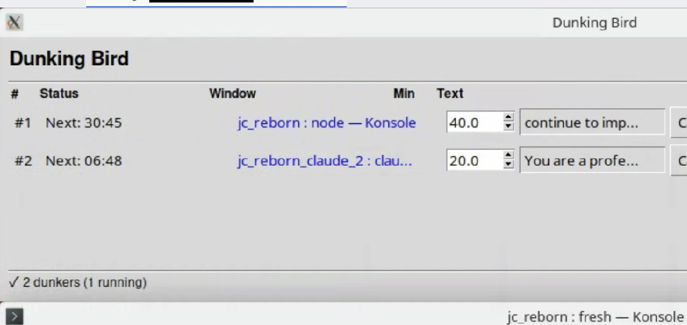

Lab · tools
The dunking bird
A dumb hack that keeps the loop running.
Published
~4 min read · 1017 words
On this page
What it is

Dunking bird is a small piece of software I wrote. It is not advanced development. It is not a research artifact. It is a dumb hack that pokes multiple LLM agents in parallel so they keep working instead of going idle and falling over.
It is named after the desktop novelty toy — the glass bird with the felt head that, when wet, repeatedly tips toward a glass of water. The toy is a heat engine: evaporation cools the upper bulb, vapor pressure shifts the liquid up, the bird tips, the head re-wets, repeat. It’s a satisfying piece of physics on a coffee table. The software does the analogous thing in software: it taps things at the right rhythm so they stay alive.
The capability that matters here is the multi-agent part. One keep-alive script for one terminal is a thing every sysadmin has written. Dunking bird drives several agents at once — different sessions, different work queues, different long-running loops — and keeps all of them productive without a person at any of their keyboards. That is the part that turned out to be useful on this project.
A longer write-up of the program lives at
hunterdavis.com/2026/03/21/announcing-dunking-bird.html.
This page is just about why it kept showing up on this project.
Why this project needed one
Performance work on the PS1 port is unglamorous. Most of it is the same
loop, run a thousand times: build, boot a headless DuckStation under
Docker, run a scene to scene-end, capture JCPERF2 lines,
parse them, summarize, decide whether the change beat the baseline,
record the result, change one thing, do it again. The loop is mostly
deterministic, and most iterations are uninteresting.
The full experiment ledger on the perf branch has a few hundred entries. Most of them are single-knob probes — window size 22 KB, slack guard 4 VBlanks, that kind of thing. Each individual run takes minutes. The decision that follows takes seconds. The cumulative time spent staring at a terminal waiting for the next “do not promote” line is real, and that is the time that needs an automation that does not require a person to be present.
Dunking bird does not run experiments. Other scripts do that. What it does is keep several agents in motion at the same time — the perf experiment driver in one session, a content-authoring agent on a different page in another, a regtest harness wrapper somewhere else — so I am not the rate limit on any of them. None of those sessions has to be watched in real time. The bird taps each one in turn. They keep going. I sleep.
The honest limits
It is not original. Variants of this idea have been used by every sysadmin who ever needed an SSH session to live longer than a corporate network’s idle timer. Mouse jigglers exist on Amazon for ten dollars. The novelty here is small: I wrote my own, I named it after a glass bird, I use it on this project a lot, and it has a tiny landing page on my site. That is the entire surface area of the contribution.
It does not make a build faster. It does not make a perf experiment better. It does not change what the loop measures or how the harness gates results. The actual perf work — the experiment log, the methodology, the regtest harness — all exists independent of any keep-alive. Dunking bird only saves the cost of a person sitting in a chair while the harness does its thing.
Where it shows up on the perf branch
It is used during long regression-as-lifestyle runs and during LLM-assisted iteration loops where the agent is making small changes, testing them, and waiting on results. When a session has to live across a coffee break, an errand, or a night of sleep, the dunking bird is what keeps it intact.
It is not the reason any of the perf wins on this branch are real. The hallucination engineering discipline, the strict acceptance gates in the harness, and the human re-review of every promoted experiment are. The dunking bird only kept the lights on while those happened.
What it teaches about advanced development
Probably not much. The honest framing is: when a workflow has a long unattended phase, the cheapest way to make it survive that phase is often a tiny piece of software whose only job is to act like a person sitting at a keyboard. There is no better answer in 2026 than there was in 1996. The keep-alive script is a recurring pattern in this craft, and the recurring pattern is worth naming, but it is not a breakthrough.
The reason this gets a page on the site at all is that it is part of the actual story of how the PS1 port got worked on, and the project voice is plainspoken about how the work happens. Pretending the loops are watched manually would be a small lie. Pretending the dunking bird is sophisticated would be a different one. So: it’s a dumb hack, it works, and it is part of why the perf branch’s experiment log got as long as it did.
Cross-links
- The dev environment, photographed — the bird mid-double-dunk, in context with the rest of the workflow.
- AI sub-agents on this project — the agents the bird keeps tapping; what they actually wrote and what they explicitly didn’t.
- The LLM pass — what the pair-programming loop actually does between dunking-bird ticks.
- Hallucination engineering — the discipline that makes LLM-assisted runs trustworthy at all.
- The 24/7 build farm — what the bird keeps fed.
- Regression as a lifestyle — the harness on the other end of the unattended loop.
- Performance loop — the curious-hacker view of why the loop matters.